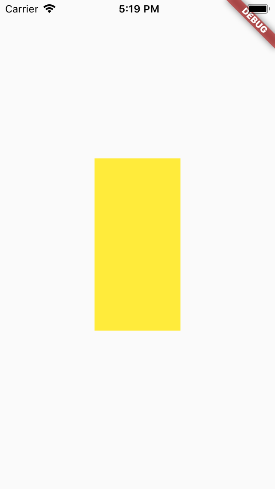
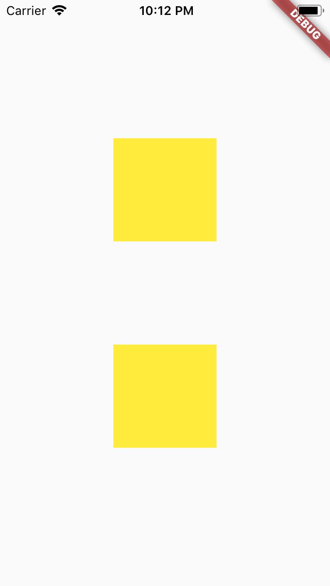

Visibility widget helps you to hide/show a widget. Normally you won't require the Visibility Widget to hide or show the Widget. You can simple acheive the result by inline if statement, or a conditional statement. Here is how you can do that:
Let’s say you want to hide MyWidget in this layout when condition is false
Column(
children: <Widget>[
OtherWidget(),
if(condition == true) MyWidget(), // Inline if statement, coutersy of Dart 2.3!
OtherWidget(),
],
)
However, things get a little more complicated when you notice that if MyWidget is a StatefulWidget, it’s State will be recreated each time MyWidget is shown. Or the fact that as MyWidget is removed you won't get the size. What should you do if you want to get MyWidget size to do some calculation while it is hidden? In these case the Visibility widget may satisfiy your requirement.
The above example is same as:
Visibility( visible: condition == true, child: MyWidget(), )
If the visible property is false then the Widget will be removed from the widget tree and replaced with 0 sized box. If the property is true, the MyWidget will be created and will be included in the widget tree, means the widget MyWidget will be visible. So if you change the property dynamically the widget will be recreated from the scratch. This is same as using an inline if or conditional statement.
The above example will produce the following result:
We will look into other property that Visibilty widget offers in order to maintain its state and size while it is hidden.
If true the States in the child widget will not be lost when it’s hidden.
If true, it will maintain the child widget space when it’s hidden.
If true, it will maintain the animations within the child widget when it’s hidden.
If true, it will allow the widget to be interactive when it’s hidden.
This property takes a widget which will be replaced when the widget is hidden. If this property is not present by default a zero sized based widget will be replaced.
A new notes about the above properties:
maintain__ fields are false by default.maintainSize is true then maintainAnimation and maintainState must also be true.Keeping the child’s State but hide the child completely. You can also get the child’s size while it’s hidden.
Visibility( visible: condition == true, maintainState: true, child: MyWidget(), )
Let the child occupy space in the layout but prevent users from interacting.
Visibility( visible: condition == true, maintainState: true, maintainAnimation: true, maintainSize: true, child: MyWidget(), )
Let the child occupy space in the layout and allow users to interact.
Visibility( visible: condition == true, maintainState: true, maintainAnimation: true, maintainSize: true, maintainInteractivity: true, child: MyWidget(), )
A widget that makes its child partially transparent. For the value 0.0, the child is simply not painted at all.
Opacity( opacity: _visible ? 1.0 : 0.0, child: MyWidget(), )
This is more efficient than adding and removing the child widget from the tree on demand
The child will stay in the widget tree only not painted so it’s State won’t be recreated. It will still take up space and has interactivity.
This is the equivalent of:
Visibility( visible: condition == true, maintainState: true, maintainAnimation: true, maintainSize: true, maintainInteractivity: true, child: MyWidget(), )
You can animate the transition using AnimatedOpacity or a custom AnimationController.
A widget that lays the child out as if it was in the tree, but without painting anything, without making the child available for hit testing, and without taking any room in the parent. Offstage children are still active: they can receive focus and have keyboard input directed to them.
Animations continue to run in offstage children, and therefore use battery and CPU time, regardless of whether the animations end up being visible.
Offstage can be used to measure the dimensions of a widget without bringing it on screen (yet). To hide a widget from view while it is not needed, prefer removing the widget from the tree entirely rather than keeping it alive in an Offstage subtree.
This widget will hide the child based on the offstage value.
Offstage( offstage: condition == true, child: MyWidget(), )
The child won’t take up any space or have any interactivity but you can still get the child size.
The above example is equivalent of the following:
Visibility( visible: condition == true, maintainState: true, maintainAnimation: true, child: MyWidget(), )